Neogul Neogul: illustrated history explainers
- Challenge
- Make history and geopolitics interesting to viewers in their 20s and 30s who would never search for it.
- Approach
- Recurring raccoon and "country-ball" characters carry each story. One post takes one event, place or research paper, reduces it to the question people already have, and answers it in 12 to 17 hand-drawn panels with a source list on the last one. Reels use AI-assisted video (Kling AI), edited in Premiere Pro and CapCut.
- Result
- 10.6K+ Instagram followers grown without paid promotion. 2.5M views and 814K accounts reached in 90 days; about 20K views per post on average. In October 2026, six webtoon posts passed 1M views in one month. Audience: 70% aged 18–34.
Forgotten victims: Koreans in Hiroshima and Nagasaki
82K views · KoreanAbout 70,000 Koreans were exposed to the 1945 atomic bombings and around 40,000 died, yet they were overlooked by both Korea and Japan for decades. The story follows them from forced labour migration to Hapcheon, "Korea's Hiroshima", and the 2016 law that finally recognised them.
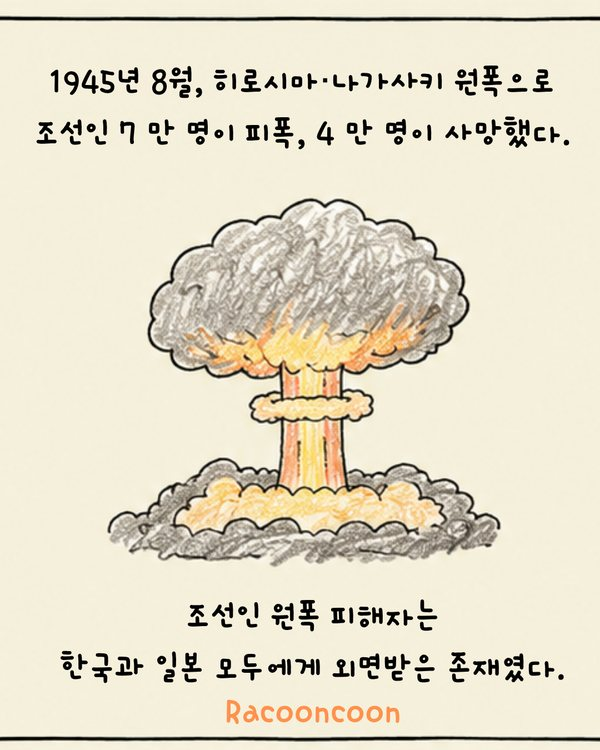
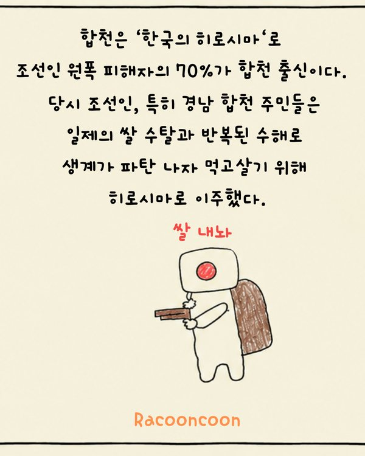
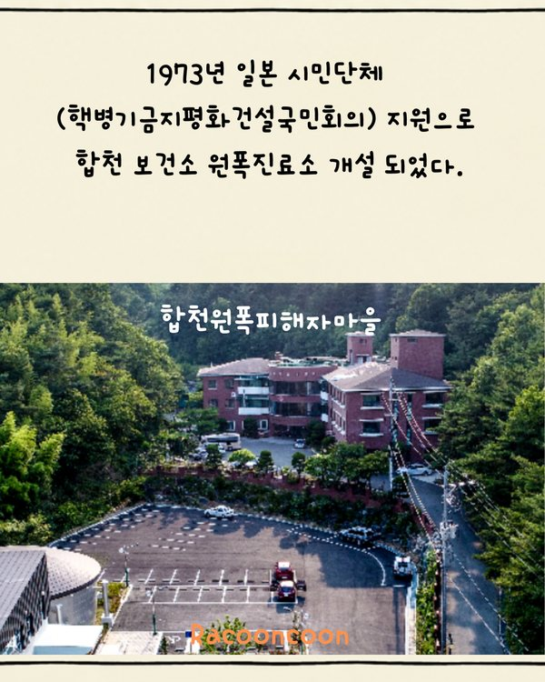
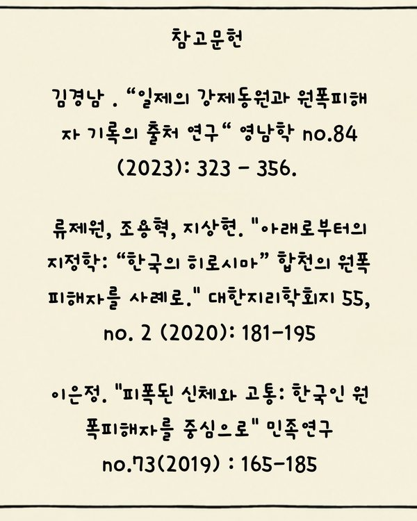
The Koryo-saram: Stalin's 1937 deportation of Soviet Koreans
36K views on Instagram · English edition on TikTokWhy 171,781 Koreans were moved from the Soviet Far East to Central Asia, told through security fears, propaganda and survival. Ends with an archival photograph and academic sources.
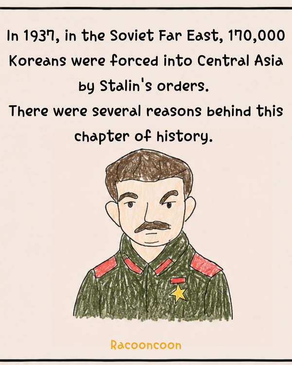
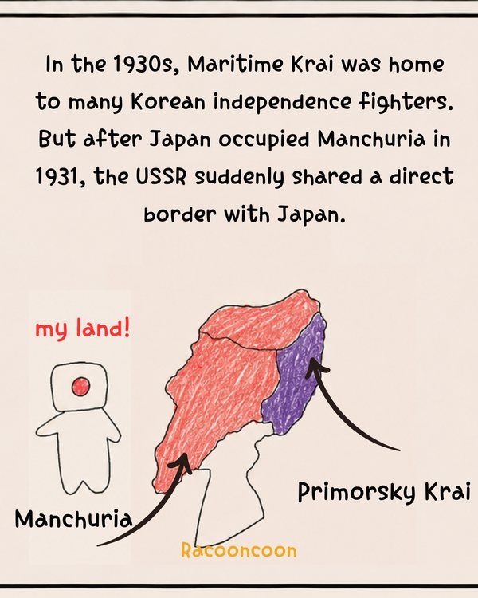
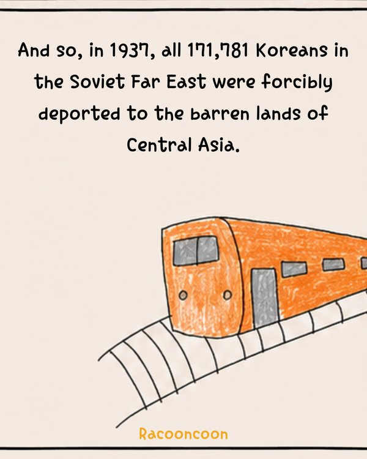
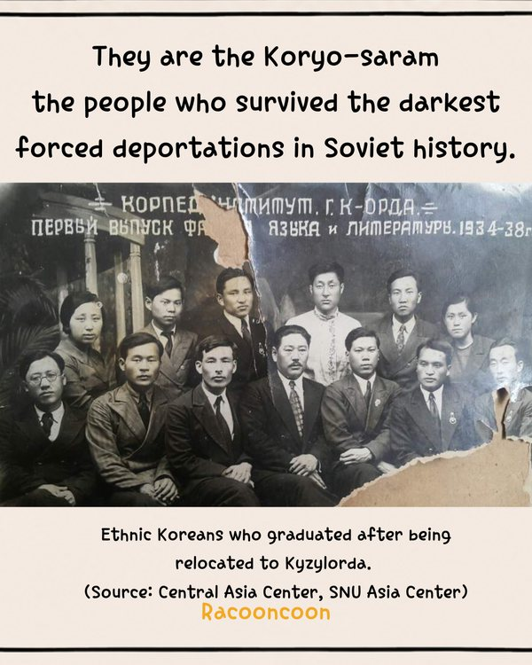
Kaliningrad: a piece of Russia inside the EU
33K views · KoreanHow a Prussian city became a Soviet military base and then an isolated exclave, explained through maps, history and today's politics.
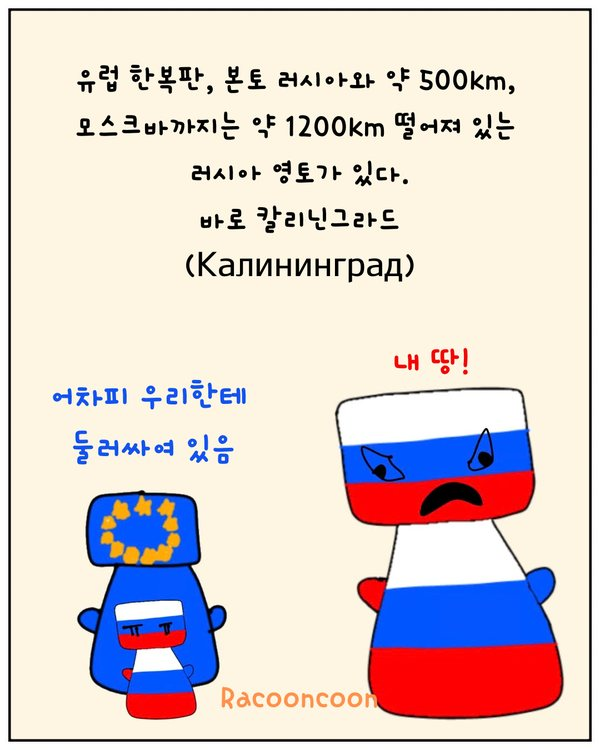
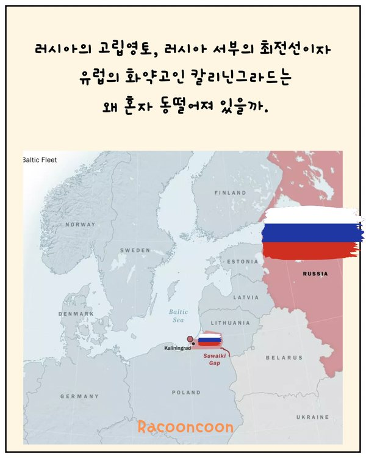
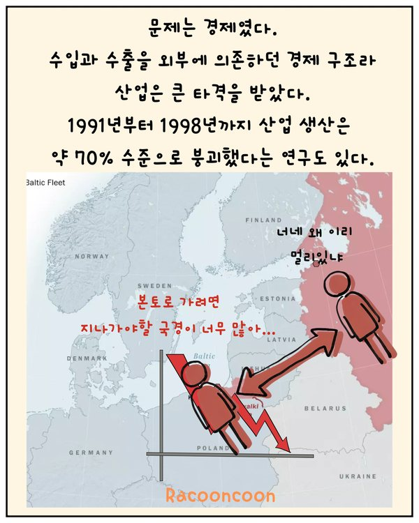
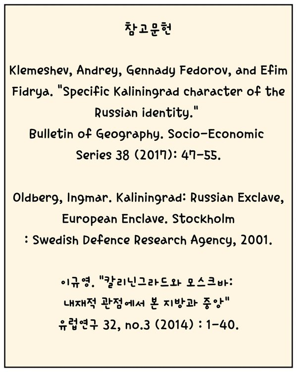
Sauna diplomacy: how Finland negotiated with the USSR
KoreanA peer-reviewed article (Reynolds, 2025, Cooperation and Conflict) adapted into a 12-panel story for a general audience.
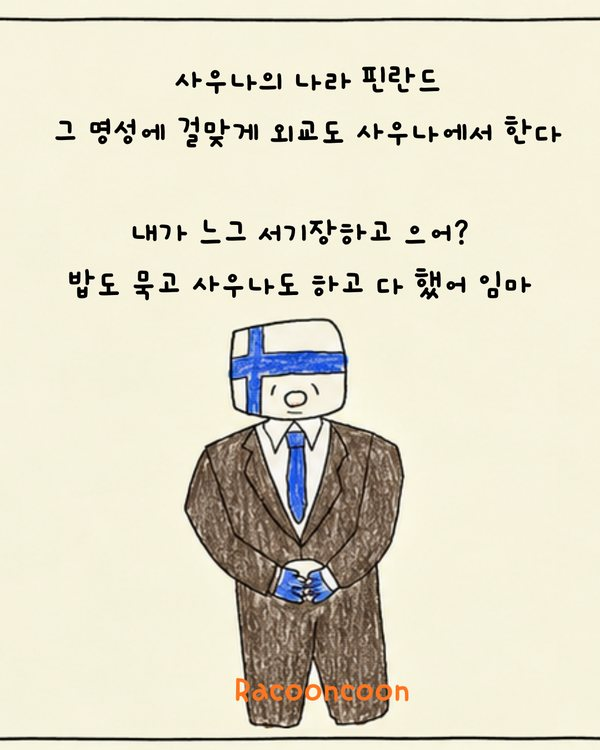
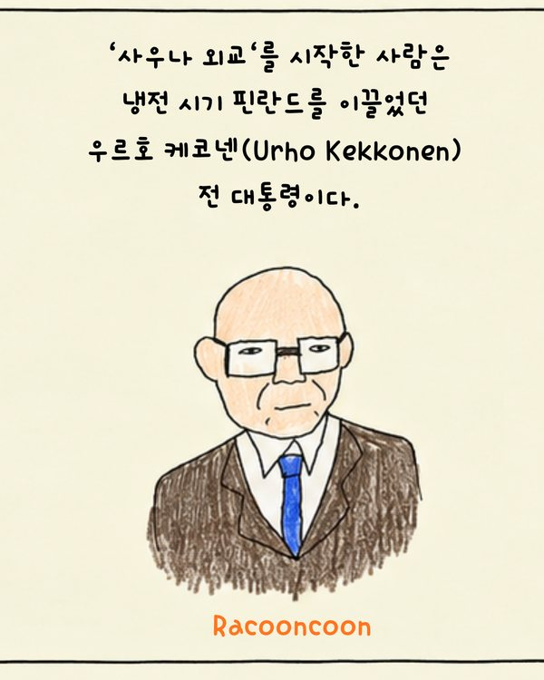
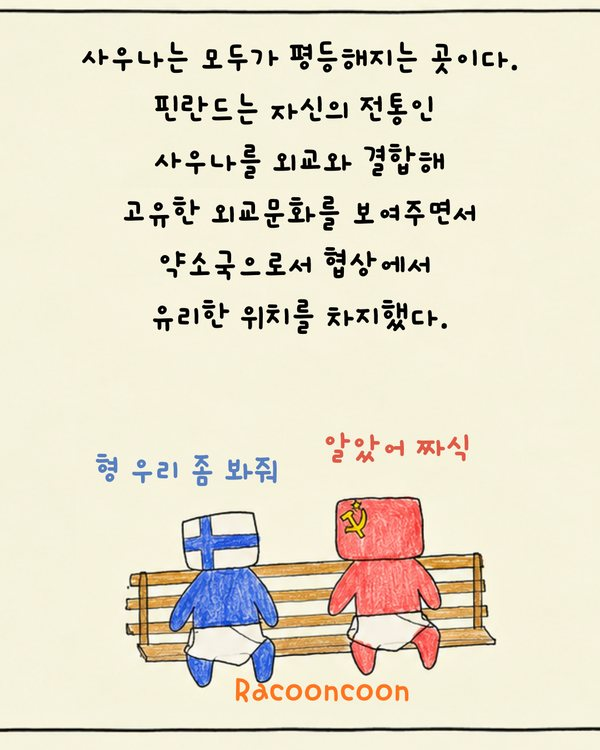